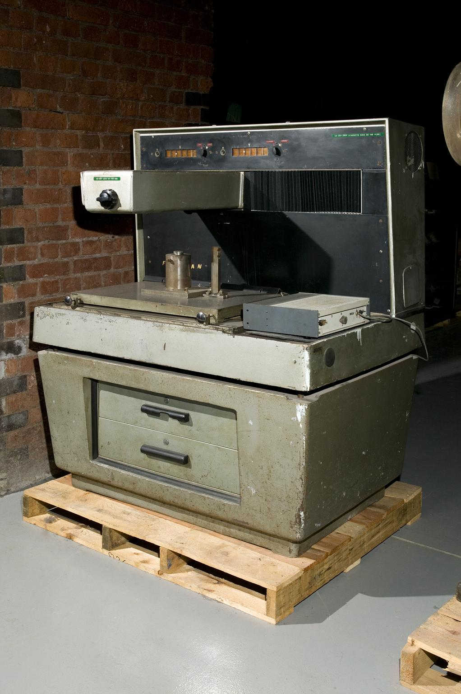

Quality Control
Precision is a Standard
Độ chính xác, tính ổn định và an toàn được kiểm soát ở từng công đoạn, không chỉ ở khâu cuối.
Đo ở mọi công đoạn
Kiểm tra từ vật liệu đầu vào, chi tiết đầu tiên đến sản phẩm hoàn thiện.
Ghi nhận bằng số liệu
Kết quả đo được lưu thành biên bản, gắn với từng lô hàng.
Xác nhận trước bàn giao
Sản phẩm chỉ rời xưởng khi đã đối chiếu đủ yêu cầu kỹ thuật.
Quy trình kiểm tra
Sáu bước kiểm tra nối tiếp từ vật liệu đầu vào đến sản phẩm hoàn thiện.
- 01
Vật liệu đầu vào
Đối chiếu chủng loại, kích thước phôi và chứng từ vật liệu.
- 02
Chi tiết đầu tiên
Đo toàn bộ kích thước của chi tiết đầu tiên trước khi chạy loạt.
- 03
Kiểm tra trong quá trình
Người vận hành đo tại máy theo tần suất quy định.
- 04
Kích thước và bề mặt
Kiểm tra dung sai, độ đảo, độ nhám và khuyết tật bề mặt.
- 05
Đối chiếu bản vẽ
So sánh với bản vẽ và yêu cầu kỹ thuật đã thống nhất với khách hàng.
- 06
Xác nhận bàn giao
Lập biên bản, đóng gói bảo vệ và bàn giao kèm hồ sơ.

Thiết bị đo và phương pháp
Thước cặp, panme
Đo kích thước ngoài, trong, chiều sâu.
Đồng hồ so
Đo độ đảo, độ phẳng, độ đồng tâm.
Calip, dưỡng
Kiểm tra nhanh lỗ, ren theo dải dung sai.
Thiết bị khác
[Cập nhật theo danh mục thực tế]
Kiểm tra 100%
Áp dụng cho kích thước lắp ghép quan trọng.
Kiểm tra lấy mẫu
Theo tần suất thống nhất với khách hàng.
Kiểm tra ngoại quan
Bề mặt, mối hàn, lớp sơn, ba via.
Biên bản đo
Kết quả đo gắn với mã chi tiết và lô hàng.
Hồ sơ vật liệu
Chứng từ vật liệu khi khách hàng yêu cầu.
Tiêu chuẩn và chứng nhận
Chỉ công bố khi doanh nghiệp có thông tin xác thực. [Cập nhật]
Xử lý sai lệch
Khi phát hiện sai lệch, quy trình dừng lại để xử lý trước khi chi tiết đi tiếp.
Liên hệ bộ phận kỹ thuật